Case Study: Startseite ElternLeben → wellcome · 15 Minuten
0:00–1:30Einstieg
1:30–3:45Analyse
3:45–4:15Das Ziel
4:15–6:45Frage 1: Einstiege
6:45–8:45Frage 2: SEO und GEO
8:45–10:15Frage 3: Marke und Vertrauen
10:15–12:15Frage 4: Die App
12:15–13:45Tech-Entscheidung
13:45–15:00Abschluss
Einstieg
0:00–1:30
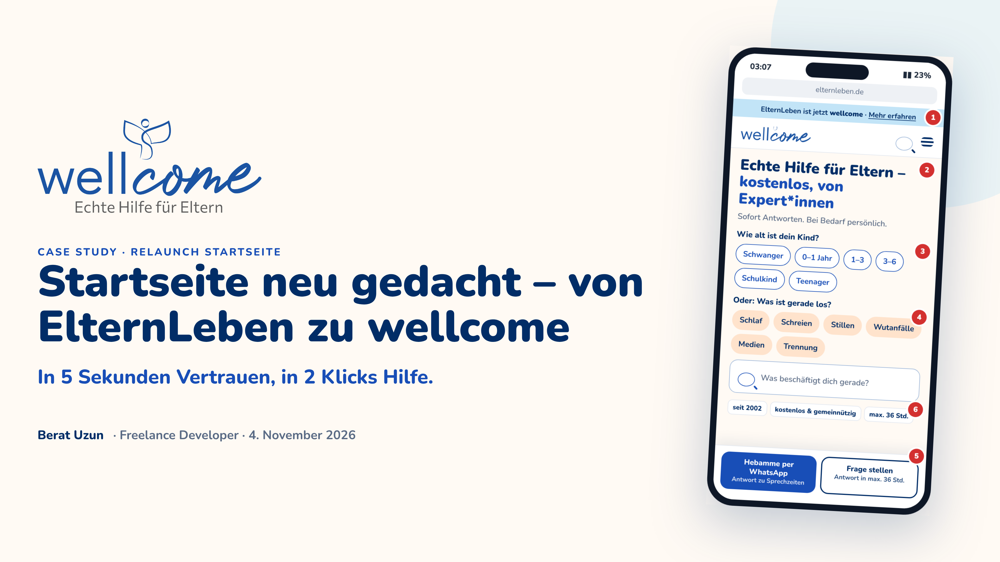
Folie 1 · Titel
Ich schaue aus zwei Richtungen: der Mensch im schwierigen Moment und die Maschine.
Danke für die Aufgabe
Ihr wollt sehen, wie ich denke: bei jeder Entscheidung sage ich das Warum
Ablauf: Analyse, eure 4 Fragen, Tech-Stack
Nichts davon ist fertig, ich freue mich auf eure Sicht
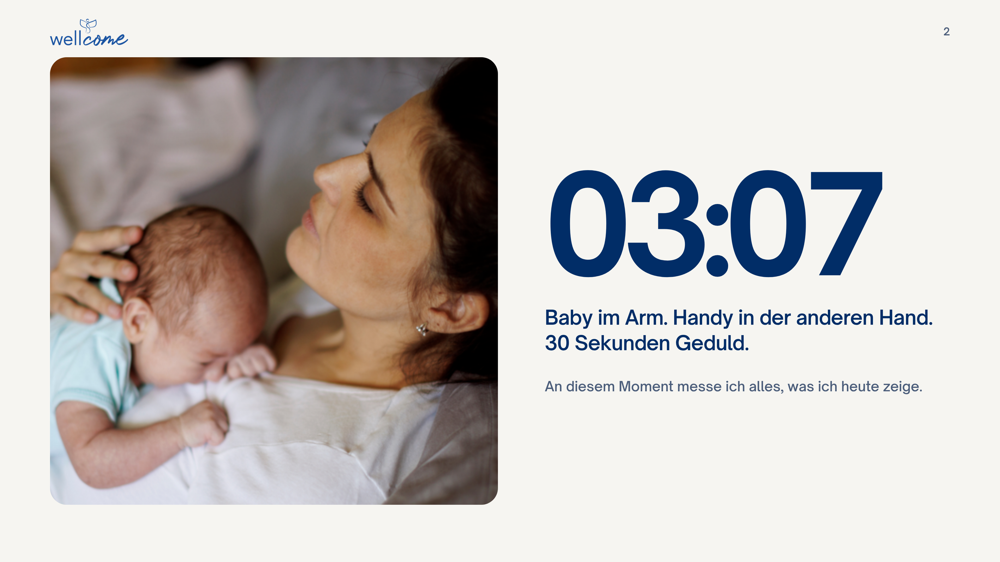
Folie 2 · 03:07
An diesem Moment messe ich alles, was ich heute zeige.
Mutter, 3 Uhr nachts, Baby im Arm, Handy in der anderen Hand
30 Sekunden Geduld
Hilft eine Idee ihr nicht, fliegt sie raus
Analyse
1:30–3:45
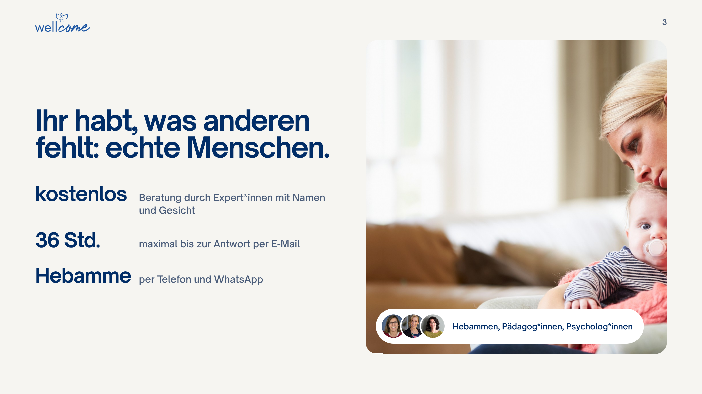
Folie 3 · Eure Stärke
Euer Kern sind echte Menschen.
Kostenlos, Fachleute mit Namen und Gesicht
E-Mail-Antwort in max. 36 Std.
Beispiel: Karin Hackbarth, Hebamme seit 1996, per Telefon und WhatsApp
Ich mache den Kern sichtbarer, ich erfinde nichts Neues
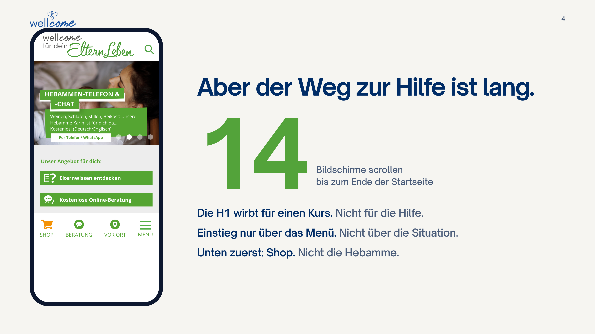
Folie 4 · Der Weg ist lang
Nicht der Inhalt ist das Problem, sondern der Weg dorthin.
Methode: auf dem iPhone bis unten gescrollt, rund 14 Bildschirme
H1 wirbt für einen Kurs (Eltern-Stress-Test)
Kein Einstieg für „Ich brauche jetzt Hilfe“
Leiste unten: Shop zuerst, nicht die Hebamme
Keine Kritik an Einzelentscheidungen, nur in Summe zu viel
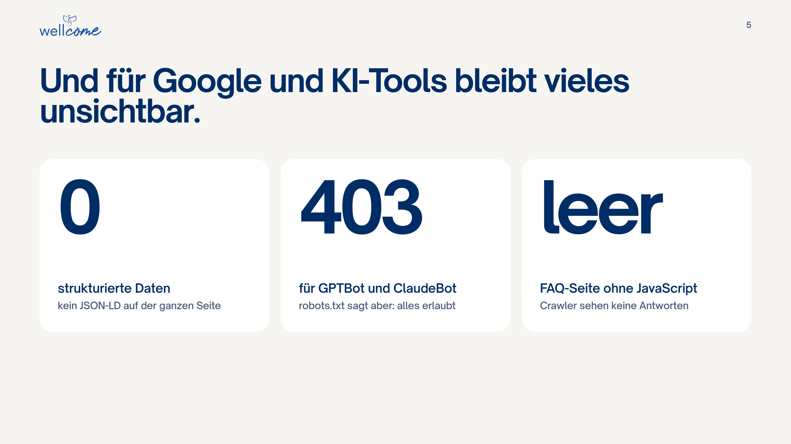
Folie 5 · Für Maschinen unsichtbar
Ich habe auch das HTML gelesen, also das, was Maschinen sehen.
0 strukturierte Daten (kein JSON-LD)
403 für GPTBot und ClaudeBot, robots.txt erlaubt aber alles
FAQ-Seite ohne JavaScript leer
Von außen gemessen, mit Search Console würde ich es prüfen
403 als Frage stellen: „Ist das bewusst so entschieden?“
Das Ziel
3:45–4:15
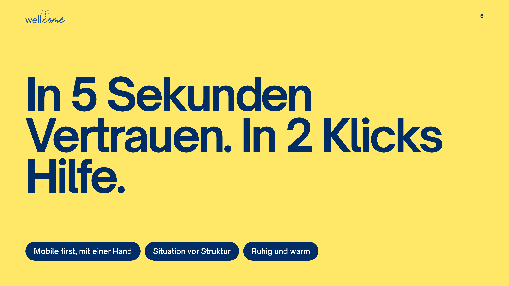
Folie 6 · Gelbe Folie
In 5 Sekunden Vertrauen, in 2 Klicks Hilfe.
Mobile first, mit einer Hand bedienbar
Situation vor Struktur: Anliegen statt Menü
Ruhig und warm: wer nachts kommt, braucht Ruhe
Frage 1: Einstiege
4:15–6:45
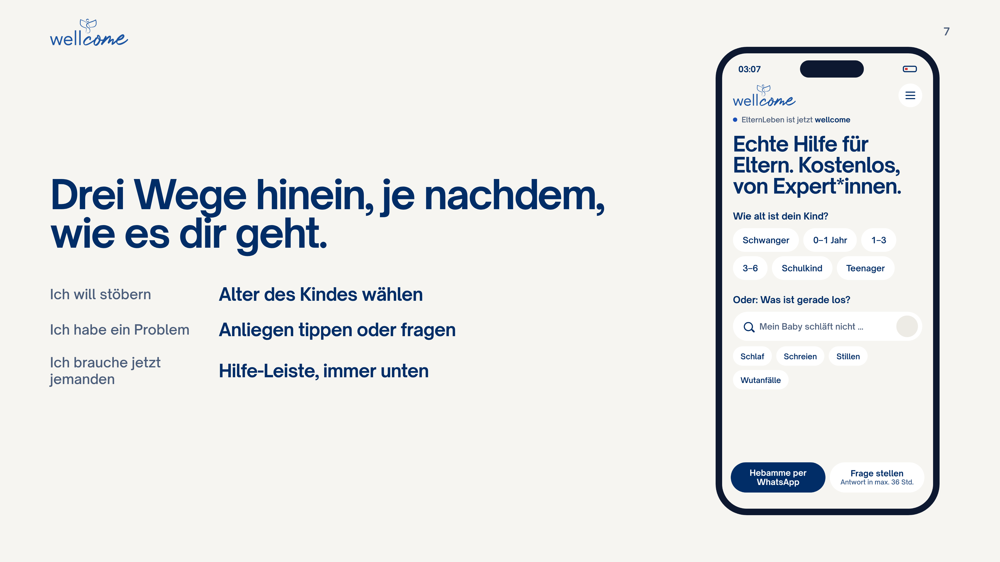
Folie 7 · Drei Wege hinein
Eltern kommen nicht mit Zielgruppen, sondern mit Stimmungen.
Stöbern: Alter wählen (gibt es schon im Menü, ich hole es nach oben)
Konkretes Problem: Anliegen-Chips und Suche „Was beschäftigt dich gerade?“
Jetzt jemanden: feste Leiste unten, Hebamme per WhatsApp und Frage stellen, statt Shop
Heute tippt man ganze Fragen wie bei ChatGPT. Die Suche versteht später Fragen, erfindet aber nichts, sondern führt zu geprüften Inhalten und echten Beraterinnen
Chips aus euren Daten ableiten, nicht raten
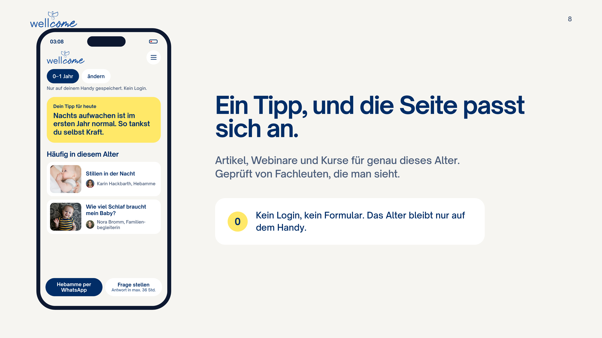
Folie 8 · Die Seite passt sich an
Ein Tipp, und die Seite passt sich an.
Tipp für heute und Artikel genau für dieses Alter
Jeder Artikel mit dem Gesicht der Fachperson
Kein Login, kein Formular
Alter nur auf dem Handy, nur wenn selbst gewählt
Warum: Personalisierung ohne Datensammlung passt zu einer gGmbH
Frage 2: SEO und GEO
6:45–8:45
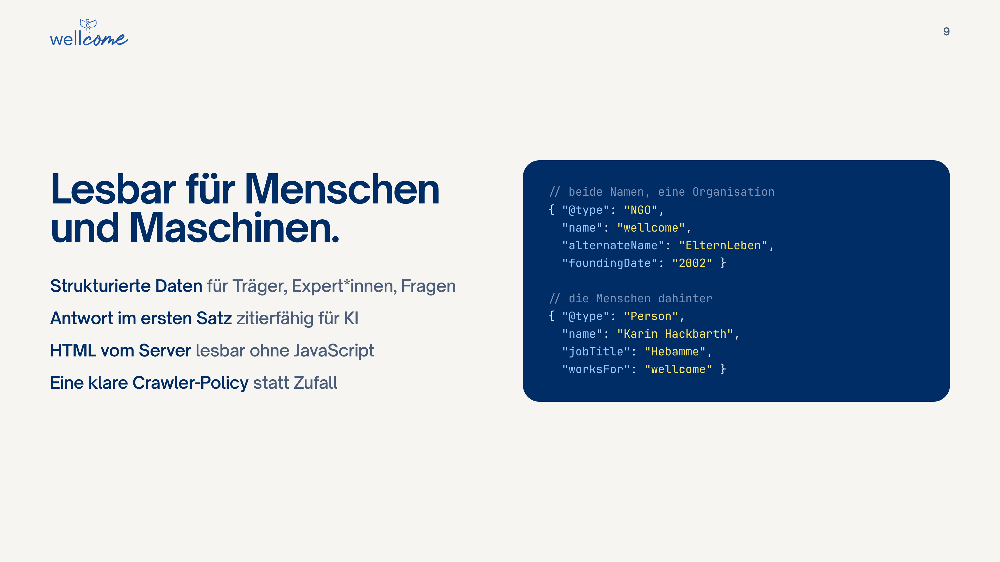
Folie 9 · Lesbar für Mensch und Maschine
KI-Tools zitieren, was sie verstehen und dem sie vertrauen.
Strukturierte Daten: wellcome, gemeinnützig, seit 2002. Karin Hackbarth, Hebamme
alternateName „ElternLeben“: beide Namen verknüpft, Rankings bleiben beim Markenwechsel
Antwort im ersten Satz, z. B. „14 bis 17 Std. Schlaf“
HTML vom Server, vor allem die FAQ
Crawler-Policy bewusst in robots.txt: Suche ja, Training eure Entscheidung
Messen: Search Console und jeden Monat 10 Elternfragen an ChatGPT, Perplexity, Gemini
Falls gefragt: Google zeigt FAQ-Snippets kaum noch, das Markup lohnt sich trotzdem für KI. llms.txt ist kein offizieller Standard.
Frage 3: Marke und Vertrauen
8:45–10:15
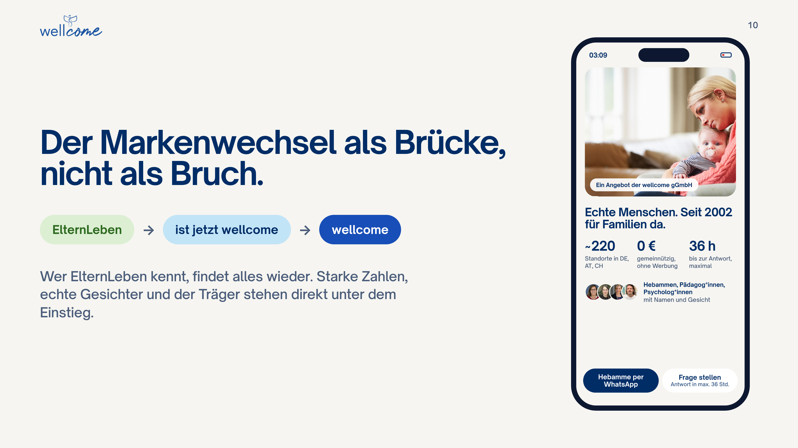
Folie 10 · Die Brücke
Der Markenwechsel als Brücke, nicht als Bruch.
Vertrauen = Wer steht dahinter? Wer hilft konkret? Wem hat es geholfen?
Direkt unter dem Einstieg: seit 2002, ~220 Standorte, kostenlos und gemeinnützig
Echte Gesichter statt Stockfotos, Zitate mit Kontext („Mutter von Zwillingen, 4 Monate“)
Logo heißt schon „wellcome für dein ElternLeben“: ElternLeben, dann „ist jetzt wellcome“, dann wellcome
Blau für Vertrauen, warme helle Flächen, Gelb nur fürs Wichtigste
Zahlen sind von 2023: „Die würde ich mit euch aktualisieren.“
Frage 4: Die App
10:15–12:15
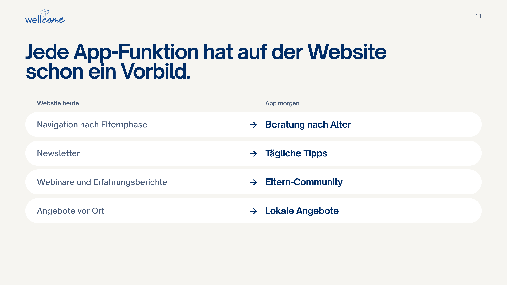
Folie 11 · Jede Funktion hat ein Vorbild
Die App ist kein Fremdkörper, sondern die nächste Stufe.
Navigation nach Elternphase → Beratung nach Alter
Newsletter → tägliche Tipps
Webinare und Berichte → Community
Angebote vor Ort → lokal
Harmonisch heißt: „mehr von dem, was ich gerade gut fand“
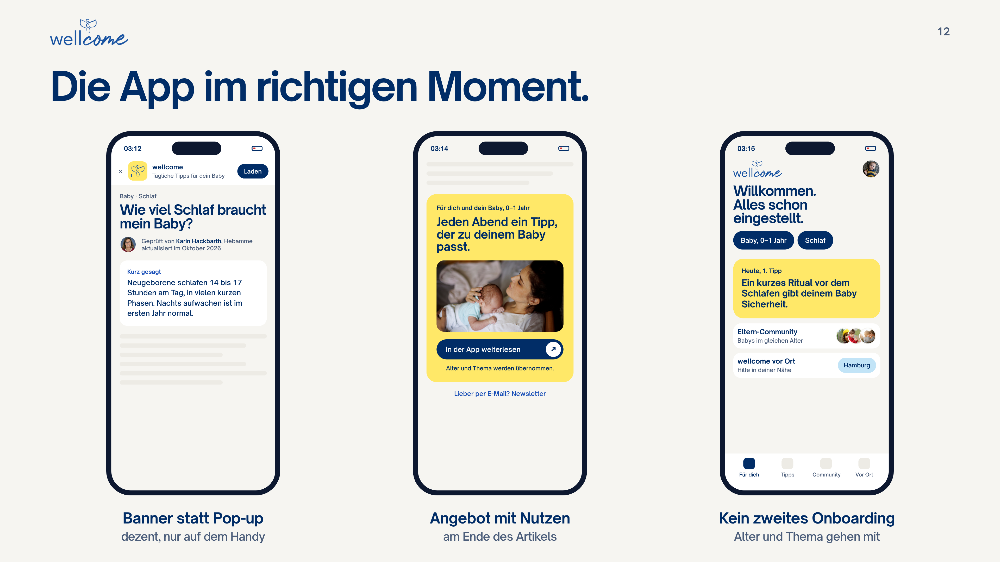
Folie 12 · Im richtigen Moment
Conversion entsteht im richtigen Moment, nicht beim ersten Besuch.
Kein Pop-up. Mobil ein dezentes Banner, Desktop ein QR-Code
Angebot am Artikelende, passend zum Thema. Newsletter als Alternative
Wichtigster Punkt: kein zweites Onboarding. Alter und Thema gehen per Deep Link mit
Messen: Klick, Installation, aktiv nach 7 Tagen
Es gibt schon eine ElternLeben-App für Kurse. Fragen, ob die neue sie ersetzt.
Tech-Entscheidung
12:15–13:45
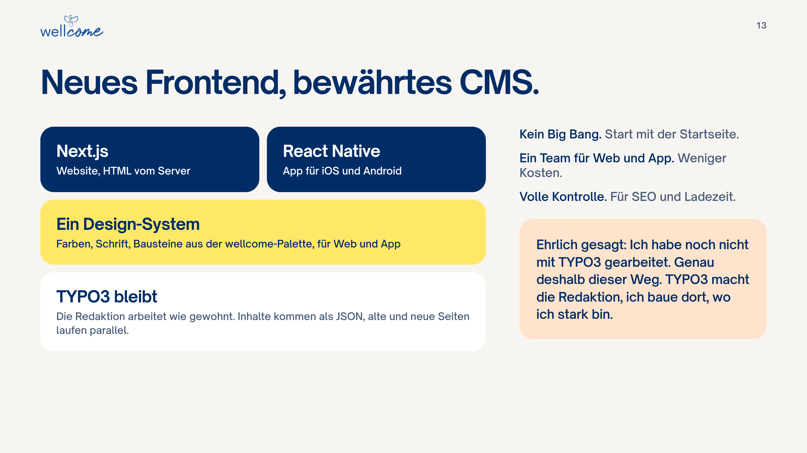
Folie 13 · Neues Frontend, bewährtes CMS
Neues Frontend mit Next.js, TYPO3 bleibt.
Kein Big Bang: TYPO3 liefert Inhalte als Daten, alte und neue Seiten laufen parallel
Start mit der Startseite, dann Schritt für Schritt
Ein Team für Web (Next.js) und App (React Native): weniger Kosten
Volle Kontrolle über HTML, Daten und Ladezeit
Ehrlich: keine TYPO3-Erfahrung. Genau deshalb dieser Weg
Abschluss
13:45–15:00
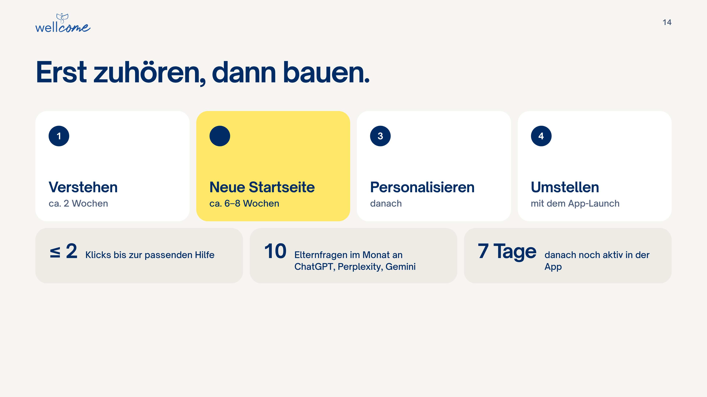
Folie 14 · Erst zuhören, dann bauen
Ich fange mit zwei Wochen Zuhören an, nicht mit Code.
Analytics, Suchanfragen, Beratungsthemen, 5 Gespräche mit Eltern
Neue Startseite in ca. 6–8 Wochen
Dann Personalisierung, mit dem App-Launch die Umstellung
Erfolg: höchstens 2 Klicks, Nennungen in KI-Antworten, aktiv nach 7 Tagen
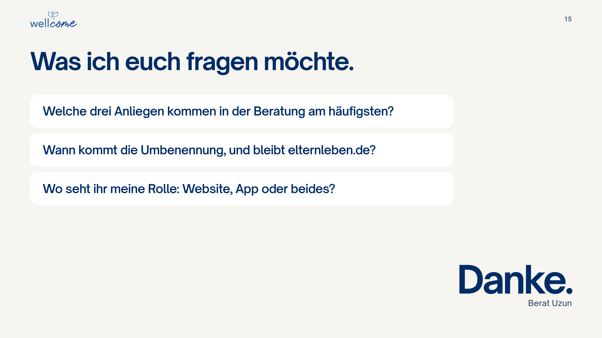
Folie 15 · Fragen an euch
Mit euren Daten sähe einiges anders aus.
Welche 3 Anliegen kommen in der Beratung am häufigsten?
Wann kommt die Umbenennung, bleibt elternleben.de?
Wo seht ihr meine Rolle: Website, App oder beides?
Danke.
Mögliche Rückfragen
Keine TYPO3-Erfahrung?Stimmt. Deshalb headless: Redaktion bleibt, ich arbeite im Frontend, die Schnittstelle arbeite ich mir ein.
Warum nicht in TYPO3 neu gestalten?Geht, aber dann Web und App getrennt. Mit React teilen beide Design-System und Code.
Datenschutz bei Personalisierung?Kein Login, Alter nur auf Wunsch auf dem Gerät, kein Tracking. Details mit eurer Datenschutzberatung.
Warum keine PWA?Zuverlässige Push-Nachrichten und Platz im App Store. Mit Expo bleibt der Aufwand klein.
KI-Suche mit falschen Tipps?Erzeugt keine eigenen Antworten, findet nur geprüfte Artikel und verweist auf echte Beraterinnen.
Warum Blau, wir mögen Grün?Blau ist eure neue Marke und steht für Vertrauen. Grün kann in der Übergangszeit als Akzent bleiben.
Verlieren wir Rankings?Nicht, wenn Domain und URLs bleiben. Beide Namen in den Daten verknüpfen, schrittweise, Search Console beobachten.
Kosten, Dauer?Seriös nach den 2 Wochen Analyse. Grob 6–8 Wochen für die Startseite.
Drei Tipps für den Vortrag
Bei jeder Entscheidung das Warum sagen. Genau danach haben sie gefragt.
Zeitdruck? Folie 9 (SEO) und 13 (Tech) kürzen, die Details kommen in der Diskussion.
Die 403-Sache als Frage stellen, nicht als Fehler.